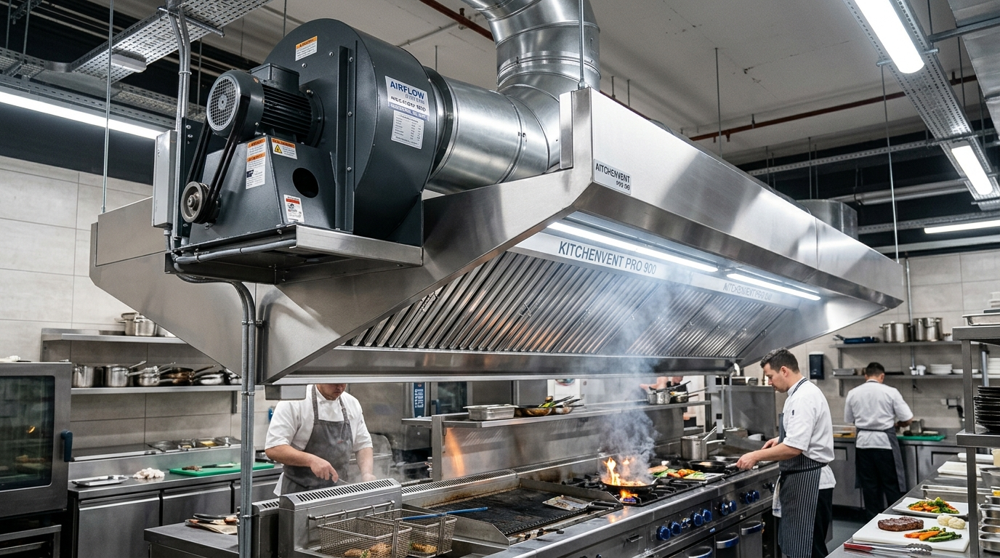

Blower exhaust adalah motor utama yang menarik asap, panas, dan uap lemak keluar dari dapur restoran. Saat komponen ini mulai mengeluarkan suara bising — bergetar keras, berdengung, atau berdecit — itu bukan hal yang bisa diabaikan. Selain mengganggu karyawan dan tamu, kebisingan berlebih adalah tanda peringatan bahwa ada komponen yang akan segera rusak parah.
Berdasarkan pengalaman tim kami menangani ratusan kasus di berbagai restoran, hotel, dan katering di Jabodetabek, berikut adalah 5 penyebab paling umum blower exhaust menjadi bising beserta solusi praktisnya.
Jangan Tunda! Bearing yang dibiarkan rusak dalam 2–4 minggu dapat merusak shaft dan impeller secara permanen. Biaya perbaikannya 5–10× lebih mahal dibanding servis bearing saja.
1. Bearing (Bantalan) Aus atau Kering Pelumas
Bearing Aus / Kering
Penyebab nomor satu — sekitar 60% kasus. Bearing yang aus atau kering menghasilkan bunyi rrrr... rrr... kasar seperti gerinda besi. Mudah diidentifikasi dengan menyentuh housing bearing saat blower hidup: jika terasa panas tidak wajar, sudah waktunya diperiksa.
Cara Mengatasinya
- Periksa kondisi bearing dengan memutar shaft secara manual — kasar atau ada getaran = harus ganti.
- Gunakan bearing industrial grade (SKF, FAG, NSK), bukan bearing murah pasar yang cepat rusak.
- Lakukan pelumasan (greasing) setiap 3 bulan pada bearing dengan nipple pelumasan.
- Pasang bearing dengan alat press khusus — jangan pukul palu karena merusak presisi dudukan.
2. V-Belt Kendur, Retak, atau Salah Alignment
V-Belt Aus / Kendur
Belt yang sudah retak, mengeras, atau kendur menghasilkan bunyi klap-klap berulang atau decitan karet. Belt terlalu kencang pun berbahaya — justru mempercepat keausan bearing di kedua sisi pulley.
Cara Mengatasinya
- Cek tegangan belt: tekanan jempol di tengah tidak boleh melentur lebih dari 10–15 mm.
- Ganti belt jika terlihat retakan, sobekan, atau pengerasan di permukaan belt.
- Pastikan alignment pulley menggunakan penggaris lurus atau laser alignment tool.
- Jika blower menggunakan 2 belt, ganti keduanya sekaligus — beda umur pakai menyebabkan beban tidak seimbang.
3. Impeller Kotor Penuh Kerak Lemak

Proses pembersihan impeller blower exhaust yang tertutup kerak lemak tebal — penyebab utama getaran dan kebisingan.
Impeller Penuh Kerak
Kerak lemak dari asap dapur yang menempel tidak merata pada sudu impeller menyebabkan ketidakseimbangan rotasi (imbalance). Hasilnya: getaran seluruh bodi blower dan bunyi dengungan berat wuuung... wuuung... yang konstan.
Cara Mengatasinya
- Jadwalkan pembersihan impeller setiap 3–6 bulan tergantung intensitas dapur.
- Gunakan degreaser kimia atau steam cleaner untuk melarutkan kerak lemak yang membandel.
- Setelah bersih, lakukan dynamic balancing agar distribusi berat merata kembali.
- Pasang baffle grease filter di hood dapur untuk menangkap lemak sebelum masuk ke duct.
4. Baut dan Rangka Pemasangan Longgar
Baut Rangka Longgar
Getaran terus-menerus dari operasional blower secara perlahan melonggarkan baut pemasangan motor, housing, dan anchor bolt rangka dudukan. Bunyi yang khas: krak-krak atau gemerincing logam berulang.
Cara Mengatasinya
- Cek torsi kencangan semua baut setiap 6 bulan dengan kunci torsi sesuai spesifikasi pabrikan.
- Pasang anti-vibration rubber pad di bawah kaki dudukan blower untuk menyerap getaran.
- Gunakan thread-locking compound (Loctite 243) pada baut kritis yang rawan kendur karena getaran.
5. Saluran Ducting Tersumbat atau Tekanan Balik Tinggi
Ducting Tersumbat
Ducting mampet penuh kerak atau grease filter yang kotor memaksa blower bekerja melawan hambatan tinggi. Akibatnya: motor kepanasan, daya listrik membengkak, dan suara blower jauh lebih keras dari biasanya.
Cara Mengatasinya
- Cuci atau ganti grease baffle filter setiap 1–2 bulan sesuai intensitas memasak.
- Lakukan duct cleaning minimal 1 kali per tahun untuk membersihkan jalur ducting secara menyeluruh.
- Periksa semua VCD (Volume Control Damper) — pastikan tidak ada yang tersangkut posisi tertutup.
- Pastikan outlet exhaust di rooftop bebas dari hambatan (sarang burung, daun, sampah).
Blower Exhaust Dapur Anda Bising Sekarang?
Tim teknisi kami siap survey gratis dan perbaiki dalam 1 hari kerja. Jabodetabek & sekitarnya.
Jadwal Perawatan Preventif yang Direkomendasikan
Hampir seluruh penyebab kebisingan blower di atas dapat dicegah dengan program perawatan berkala yang konsisten. Berikut jadwal minimum yang kami rekomendasikan:
Dengan menjalankan jadwal di atas, blower exhaust dapur Anda akan beroperasi senyap dan efisien lebih dari 5 tahun. Ducting Kitchen juga menyediakan paket kontrak perawatan berkala — hubungi kami untuk penawaran harga sesuai skala dapur Anda.